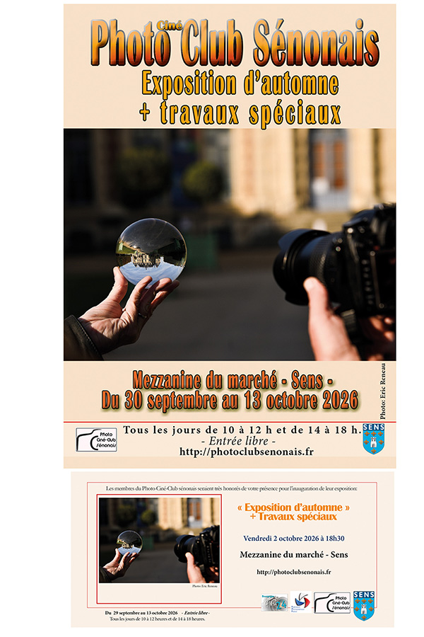
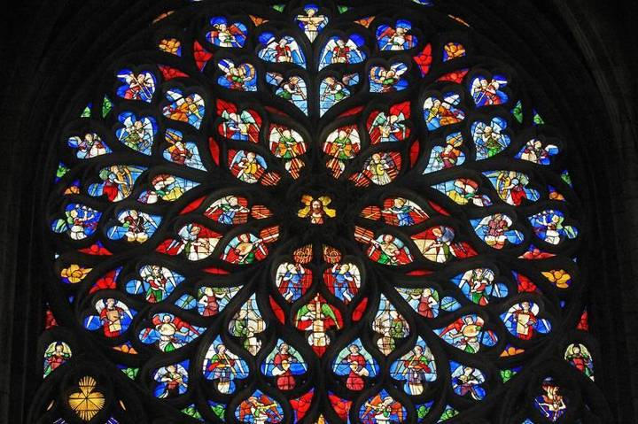
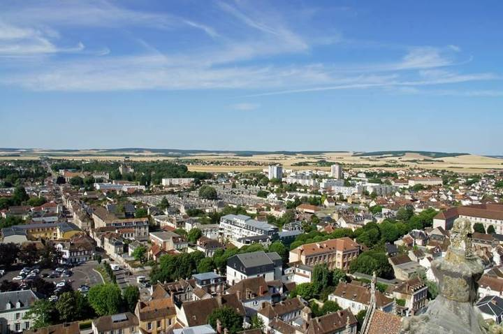
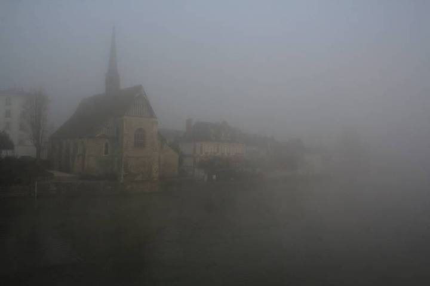

Le club photo de Sens et du Sénonais
Photo Ciné
Club Sénonais
Photographier, projeter, partager. Réunions mensuelles, six à sept expositions par an et des milliers de photos à découvrir.
Cadre 2,39 : 101 / 06
Prochains rendez-vous
Les données n'ont pas pu être chargées. Rechargez la page.
Le club
Un regard, une soirée, une exposition à la fois
Le Photo Ciné Club Sénonais réunit à Sens des passionnés de photographie, débutants ou confirmés. On y apprend, on y montre ses images, on y discute composition autour d'un écran et d'un vidéoprojecteur.
Chaque mois, les membres présentent leurs « photos du mois ». Chaque année, le club crée, organise et gère lui-même six à sept expositions, dont l'exposition d'automne à la mezzanine du marché de Sens.

Derniers travaux
Les photos du mois
Chaque photo est créditée à son auteur. Faites défiler, puis cliquez pour agrandir.
Sens, ville de lumière
La cathédrale Saint-Étienne, les quais de l'Yonne, la mezzanine du marché…
Le club puise une partie de son inspiration dans son territoire : la première cathédrale gothique, ses vitraux, les rues du centre, la campagne du Sénonais.



Rejoindre le club
Venez voir comment le club travaille
Réunion le dernier mercredi du mois à 20 h, permanence le samedi de 11 h à 12 h. Écrivez-nous ou passez nous voir : on vous explique tout.